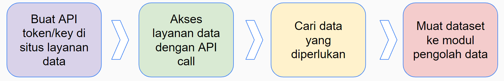

2 Data Understanding
Di dunia bisnis, proses data understanding dilakukan setelah problem bisnis didefinisikan. Tujuan utama dari data understanding adalah untuk memberikan gambaran utuh terhadap sebuah data. Setelah Data Understanding, kita dapat melanjutkan proses persiapan data.

2.1 Mengapa Kita Perlu Data Understanding
Di bidang machine learning, ada sebuah mantra yang semua data scientists harus ikuti; Garbage in, garbage out. Artinya, jika data yang dimasukkan ke model itu jelek, maka apapun yang terjadi, hasil dari model akan selalu jelek.
Semua data yang kita dapatkan belum tentu bagus dan bisa kita olah lebih lanjut karena:
- Maksud dan tujuan data berbeda
- Keadaan data terlalu terpisah, atau terlalu terintegrasi
- Kekayaan atau value data berbeda beda
- Keandalan atau reliability data berbeda beda
2.2 Data Understanding Documentation
Data Understanding Documentation adalah sebuah prosedur yang harus kita ikuti untuk mempelajari data yang akan kita gunakan dan menulis hasil pekerjaan kita secara terstruktur agar dapat dicerna oleh orang lain dengan mudah.
Data Understanding Documentation mempunyai 4 komponen, yaitu:
- Collection
- Data Sources
- Data Attribute
- Data Count
- Data Merge
- Data Sources
- Description
- Describing data
- Data Quantity
- Data Type
- Key Attributes
- Priority of Attributes
- Describing data
- Exploration
- Hypothesis of Data
- Attribute selection
- Exploration of data characteristics
- Compare with goal
- Identify subset of data
- Hypothesis of Data
- Quality
- Missing values
- Data errors/corruptions
- Inconsistencies
- Outliers
- Noise
- Missing values
3 Sumber, Susunan, Tipe dan Model Data
Data mempunyai berbagai jenis, bentuk, ukuran dan nilai. Sebagai Data Scientist, kita harus mengetahui sifat, jenis, asal, dan bentuk dari data yang kita olah.
3.1 Sumber Data
3.1.1 Internal
Data internal merupakan data yang sumbernya berasal dari dalam pihak yang dijadikan objek penelitian. Contoh data meliputi :
- Spreadsheet (excel, csv, json)
- Database (sql)
- Teks (txt, rtf)
- Media (video, audio)
3.1.2 External
Data eksternal merupakan data yang sumbernya berasal dari luar pihak objek yang diteliti. Contoh data meliputi :
- Website repository data (Kaggle, sklearn)
- Web page domain public (wikipedia, dbdata, data.go.id)
- Public Dataset (worldbank, UNICEF, WHO)
3.2 Susunan Data
Susunan data, juga dikenal sebagai struktur data, merujuk pada cara data disimpan, diatur, dan dihubungkan satu sama lain dalam suatu sistem komputasi. Ini melibatkan pemilihan format dan metode penyimpanan yang tepat agar data dapat diakses, dimanipulasi, dan dicari dengan efisien. Susunan data yang baik membantu meningkatkan efisiensi operasional, performa sistem, dan kemampuan pengambilan keputusan.
Datum adalah satuan terkecil, sebuah kumpulan teks dan angka. Pada bentuk ini, data tidak mempunyai nilai jual apapun.
Namun ketika kita menyusun beberapa datum menjadi satu kolom atau baris, kita dapat mendeskripsikan sebuah objek atau makna tertentu.
Kumpulkan banyak data maka kita menciptakan sebuah Informasi, dataset, atau konteks yang mudah dicerna oleh manusia.
Jika kita analisa sebuah dataset, kita akan mendapatkan sebuah hipotesis yang dapat dikonversi menjadi fakta atau knowledge setelah diverifikasi.
Dari sekumpulan knowledge, kita dapat menyusun sebuah decision atau keputusan yang sangat berpengaruh di kehidupan kita sehari-hari
Susunan Data dibagi menjadi 2, yaitu :
3.2.1 Structured
Data terstruktur adalah jenis data yang memiliki format atau skema yang terorganisir dengan jelas. Setiap kolom dalam data terstruktur memiliki tipe data yang konsisten, dan setiap baris berisi entitas atau objek yang serupa.
Contoh data terstruktur meliputi :
- Tabular Data
- Object Oriented Data
- Time-series data
3.2.2 Unstructured
Data tidak terstruktur merujuk pada jenis data yang tidak memiliki format atau skema yang terorganisir dengan jelas. Data ini seringkali memiliki struktur yang tidak teratur atau tidak terprediksi, sehingga sulit untuk mengklasifikasikan, mengatur, atau memodelkannya secara tradisional.
Contoh data tidak terstruktur meliputi :
- Video atau audio
- Dokumen HTML
- Tweet atau postingan sosial media
3.3 Tipe Data
3.3.1 Tipe Data Berdasarkan Sifatnya
- Data dikotomi, merupakan data yang bersifat pilah satu sama lain, misalnya suku, agama, jenis kelamin, pendidikan, dan lain sebagainya.
- Data diskrit, merupakan data yang proses pengumpulan datanya dijalankan dengan cara menghitung atau membilang. Seperti, jumlah anak, jumlah penduduk, jumlah kematian dan sebagainya.
- Data kontinum, merupakan data pengumpulan datanya didapatkan dengan cara mengukur dengan alat ukur yang memakai skala tertentu. Seperti misalnya, Suhu, berat, bakat, kecerdasan, dan lainnya.
3.3.2 Tipe Data Berdasarkan Cara Pengumpulan
- Data primer, merupakan data yang didapatkan dari sumber pertama, atau dapat dikatakan pengumpulannya dilakukan sendiri oleh si peneliti secara langsung, seperti hasil wawancara dan hasil pengisian kuesioner (angket).
- Data sekunder, merupakan data yang didapatkan dari sumber kedua. Menurut Purwanto (2007), data sekunder yaitu data yang dikumpulkan oleh orang atau lembaga lain. Data sekunder adalah data yang digunakan atau diterbitkan oleh organisasi yang bukan pengolahnya (Soeratno dan Arsyad (2003;76).
3.3.3 Tipe Data Berdasarkan Seri Waktu
- Data Cross Section, Data cross-section adalah data yang menunjukkan titik waktu tertentu. Contohnya laporan keuangan per 31 Desember 2020, data pelanggan PT. Data Indah bulan mei 2004, dan lain sebagainya.
- Data Time Series / Berkala, Data berkala adalah data yang datanya menggambarkan sesuatu dari waktu ke waktu atau periode secara historis. Contoh data time series adalah data perkembangan nilai tukar dollar amerika terhadap rupiah tahun 2016 - 2020.
4 Pengambilan Data
Proses pengambilan data, juga dikenal sebagai proses ekstraksi data, merujuk pada langkah-langkah yang dilakukan untuk mengumpulkan, mengakses, dan memperoleh data dari sumber yang relevan
Ada beberapa Cara untuk mengambil data, yaitu:

4.1 Web Scraping
Web scraping artinya mengekstraksi data secara langsung dari suatu halaman web.
Langkah-langkah umum (contoh detil dapat dilihat di https://realpython.com/beautiful-soup-web-scraper-python/)
- Tentukan URL halaman web (HTML) yang akan di-scrape.
- Gunakan fungsi requests.get untuk mengakses URL tersebut. Teks HTML akan tersimpan pada atribut text dari object yang dikembalikan requests.get.
- Lakukan parsing pada HTML dengan library beautifulsoup untuk memperoleh tabel data yang diinginkan (dengan mengekstraksi elemen-elemen HTML yang relevan).
4.2 Application Program Interface (API)
API adalah sebuah alat untuk memudahkan website dan pengguna saling bertukar informasi. API disediakan oleh berbagai website atau perusahaan seperti Kaggle dan Twitter. Biasanya API yang dimiliki perusahaan bersifat private, sehingga dibutuhkan sebuah token khusus untuk mengaksesnya. Namun ada beberapa API publik yang dapat diakses oleh siapa saja seperti PokeAPI.

4.3 Manual (Kaggle.com)
- Kita akan mengakses data dari “Goal Dataset – Top 5 European Leagues” dari Kaggle.
- Kunjungi Kaggle.com dan login (buat akun jika perlu)
- Lakukan pencarian “goal dataset top 5 European leagues”
- Klik “Goal Dataset – Top 5 European Leagues”
4.4 Direct Database
Data juga dapat bersumber dari basis data relasional (RDB, Mysql, Postgres) organisasi. Berikut langkah-langkahnya :
- Install sqlalchemy (pip install sqlalchemy), pandas (pip install pandas), dan mysql connector (pip install mysql-connector-python)
- Import semua library
- Tentukan username (root), password (kosong), port (3306), dan nama dari database (emp), lalu masukkan ke variable url.
- Buat engine menggunakan function create_engine, masukkan url sebagai parameternya
- Buat query yang akan dijalankan di database, masukkan ke variable sql
- Jalankan query menggunakan function execute
- Tampung hasil query di dataframe
- Lakukan operasi data di dataframe